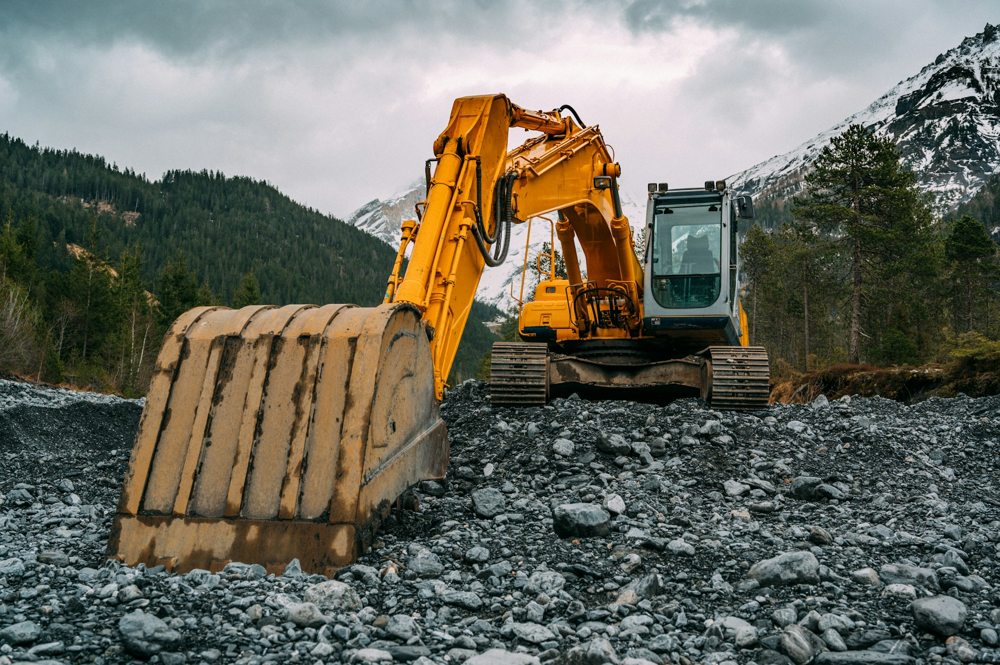
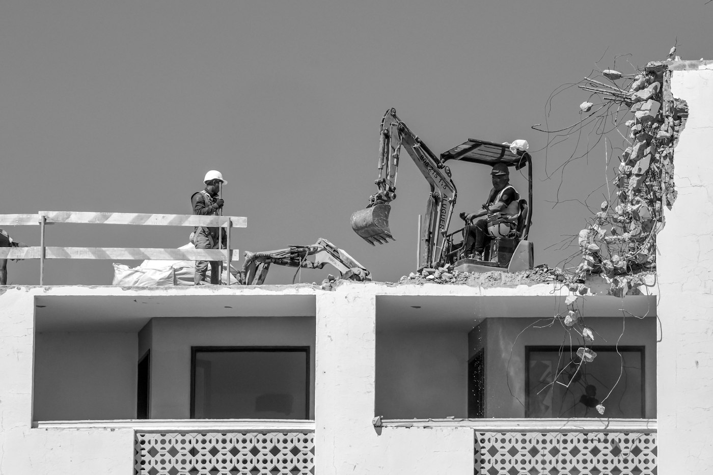
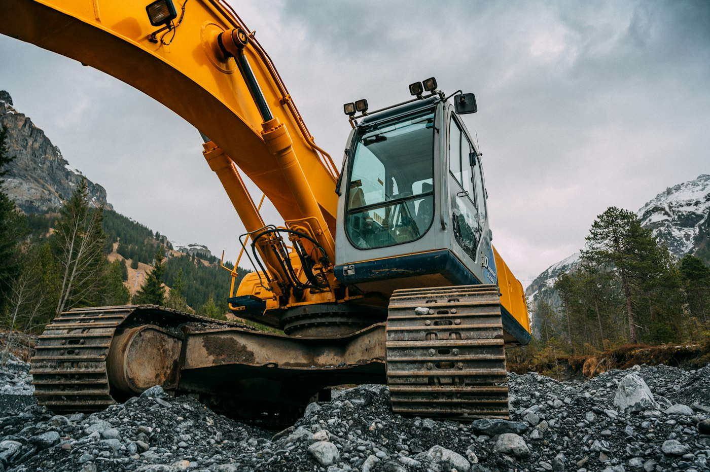
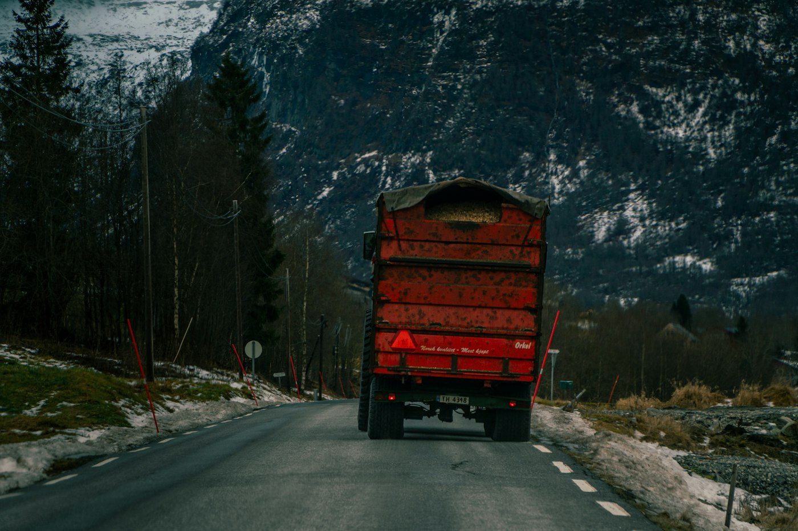
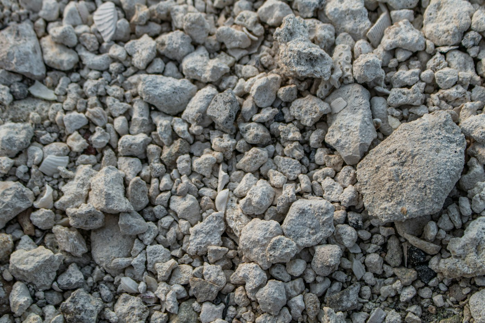
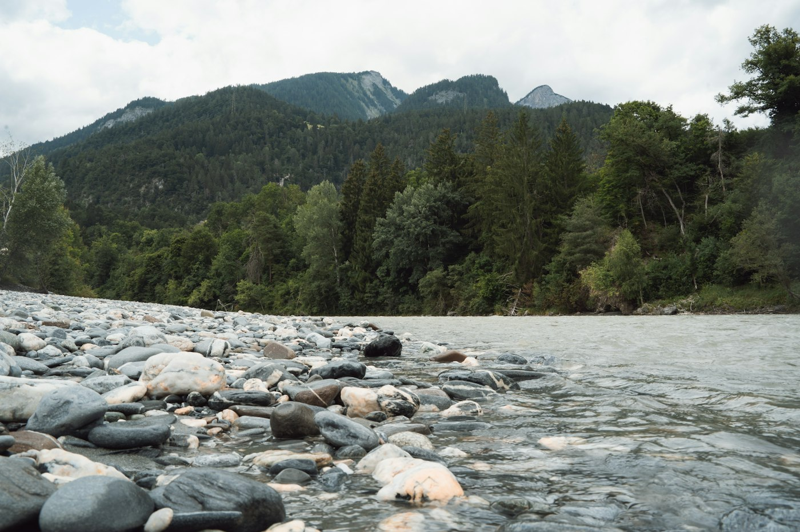
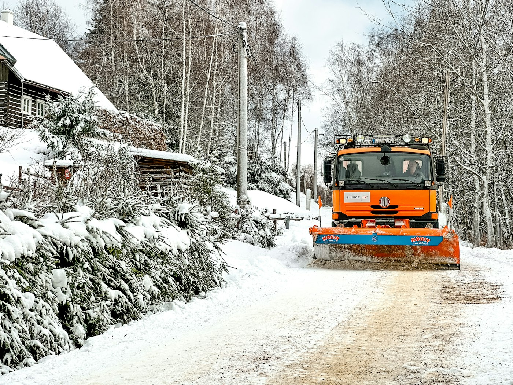
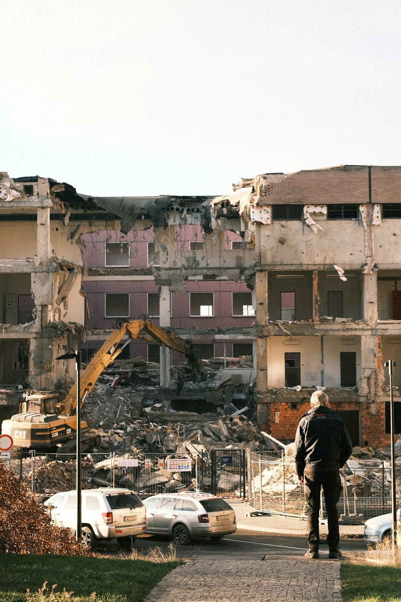
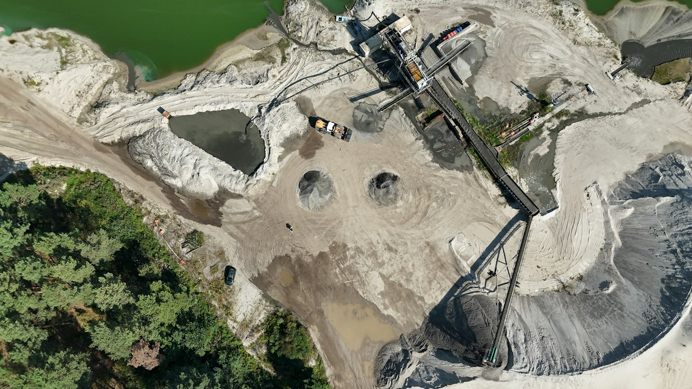

PTM SA · Biasca, Ticino · dal 1983
Scavi, demolizioni e trasporti.
Una quindicina di persone e le proprie macchine, per cantieri dalle Tre Valli al Luganese. Dal primo colpo di benna all'ultimo carico.

- 1983Società anonima dal 1983
- ~15Collaboratori, secondo la ditta
- 2Sedi: Biasca e Bellinzona
- 1'167Follower su Facebook
- 4,2Su Google, 10 recensioni
01 · Servizi
Un'unica ditta, dal cantiere da liberare al materiale da riportare.
Demolire, scavare, caricare e trasportare con gli stessi mezzi e le stesse persone. Meno passaggi, meno attese tra un'impresa e l'altra.
-
01
Demolizioni
Edifici e strutture, abbattuti con escavatori attrezzati. Il calcestruzzo non resta un rifiuto: lo avviamo al riciclo.

-
02
Scavi e movimento terra
Scavi per fondazioni, sbancamenti, riempimenti e sistemazione del terreno.

-
03
Trasporti
Autocarri propri per terra, inerti e materiale di demolizione, anche su strade di montagna.

-
04
Inerti e riciclaggio del calcestruzzo
Frantumazione e vagliatura delle macerie, per riutilizzarle come inerte nel cantiere successivo.

-
05
Lavori fluviali e riqualifiche
Interventi in alveo e riqualifiche ambientali, come sul fiume Ticino a Gudo.

-
06
Sgombero neve
In inverno strade e piazzali liberi, anche in quota.

02 · Il ciclo del materiale
Dal palazzo all'inerte.
- 01Demolizione
Piano per piano, con l'escavatore da demolizione.
- 02Carico
Le macerie si caricano e vanno all'impianto.
- 03Frantumazione e vagliatura
Il calcestruzzo si rompe e si separa per grandezza.
- 04Inerti riciclati
Pronti per tornare in un altro cantiere.
Schema illustrativo
03 · Dal cantiere
Gli ultimi lavori, come li raccontiamo su Facebook.
- Ott 2026Fiume TicinoGudoLavori in alveo
- Lug 2026Demolizione dello stadio di CornaredoLuganoDemolizione
- Giu 2026Palazzo a terraTicinoDemolizione

- Feb 2026Riqualifica ambientaleTicinoMovimento terra
- Dic 2025Il secondo Scania entra in flottaBiascaTrasporti
- Ott 2025Riciclaggio del calcestruzzoBiascaInerti
- Gen 2025A volte nevica ancoraCampraSgombero neve
Titoli dei nostri post. Le foto qui sono di repertorio: al loro posto vanno le vostre.

04 · La ditta
Una ditta di famiglia, con base a Biasca.
PTM SA nasce nel 1983 dall'impresa individuale di Pietro Malingamba. Oggi la guidano Björn Malingamba, presidente, e Giovanni Malingamba, vicepresidente. La sede è sullo Stradone Vecchio Sud a Biasca; dal 2023 c'è anche una succursale a Bellinzona.
Lavoriamo con macchine nostre: escavatori da demolizione, autocarri Scania e un vaglio Finlay 883 per gli inerti.
Una ditta che impiega una quindicina di dipendenti e si occupa di trasporti, scavi, demolizioni di edifici e in generale di movimento terra.
PTM SA, presentazione su Facebook
05 · Come lavoriamo
Quattro passi, un solo interlocutore.
- 01
Sopralluogo
Veniamo a vedere il cantiere, gli accessi e il materiale da muovere.
- 02
Preventivo scritto
Lavori, mezzi e tempi su carta, prima di cominciare.
- 03
Lavori e trasporti
Demolizione, scavo e carichi con le nostre macchine e i nostri autisti.
- 04
Smaltimento e riciclo
Il materiale va dove deve andare, il calcestruzzo torna inerte.
06 · Contatti
Un cantiere da liberare o da scavare?
Chiamateci o scriveteci due righe sul lavoro. Rispondiamo con un sopralluogo o un preventivo.
Telefono091 873 40 75- Sede
- Stradone Vecchio Sud 13
6710 Biasca - Succursale
- Via Tamporì 20
6503 Bellinzona
Stradone Vecchio Sud 13, BiascaApri in Google Maps